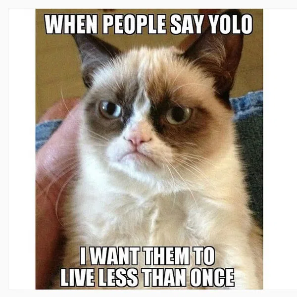

Upcoming Events
September 1st: Leader meeting
12:30 in the upstairs lab
September 6th: Meeting in T&T
318 at 12:30
Who we are
The Idaho State University Robotics Club is a group of ISU students who enjoy technology and meet together weekly to build cool things, sharpen skills, and make contact with industries to find career opportunities. Some of the skills that are commonly used/learned are: Electronic design, radio frequency, soldering, electrical, programing, motor control, troubleshooting, metalwork, mechanical, decorating, welding, and drafting. The club is affiliated with and supported in part by the "Robotics & Communication Systems Engineering Technology" program (RCET) and is open to any ISU student who is interested in learning about and building robots; and who wishes to improve the club with their skills. The Club is registered with ASISU.

What we do
"This will be a paragraph about what we are working on at the moment. In the future, it's possible that I will add some sort of archive page or something so website visitors can look at past projects.The Dursleys had everything they wanted, but they also had a secret, and their greatest fear was that somebody would discover it. They didn’t think they could bear it if anyone found out about the Potters. Mrs. Potter was Mrs. Dursley’s sister, but they hadn’t met for several years; in fact, Mrs Dursley pretended she didn’t have a sister, because her sister and her good-for-nothing husband were as unDursleyish as it was possible to be. The Dursleys shuddered to think what the neighbours would say if the Potters arrived in the street. The Dursleys knew that the Potters had a small son, too, but they had never even seen him. This boy was another good reason for keeping the Potters away; they didn’t want Dudley mixing with a child like that."
Meme of the Week!